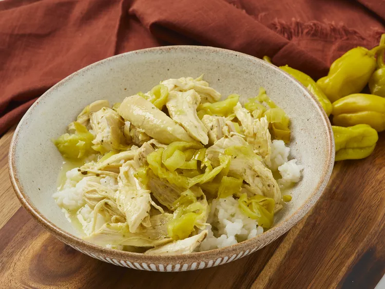

Mississipi Chicken

Description
This is such a fun and simple recipe with only 4 ingredients that can be made in the oven or in the slow cooker. The chicken turns out buttery, spicy, juicy, and herby.
Ingredients
- Chicken breasts
- Ranch dressing
- Pepperoncini
- Unsalted butter
Steps
- Preheat the oven to 350 degrees F (175 degrees C).
- Season chicken with ranch seasoning mix; place in bottom of large Dutch oven. Place pepperoncini peppers, butter, and 1/2 cup reserved pepper juice over chicken. Cover, and bake in preheated oven until chicken is fork tender, about 1 hour 30 minutes. An instant-read thermometer inserted into the center should read 165 degrees F (74 degrees C).
- Let stand 5 minutes. Shred chicken using two forks.